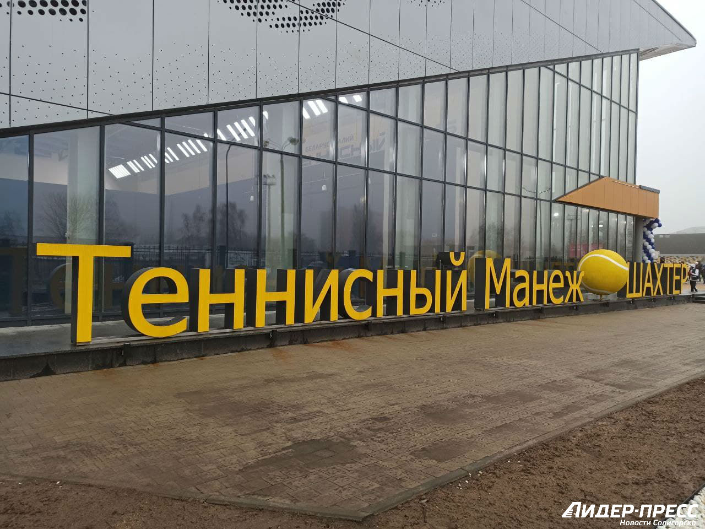

Спорт
Спорт
В городе 2 стадиона на 8 тысяч мест, ледовый дворец на 2 тысячи мест, 2 легкоатлетических манежа, 4 бассейна и 6 минибассейнов, 26 спортивных залов, теннисный манеж.
4 ДЮСШ на 2,5 тысячи человек.
Известна солигорская футбольная команда «Шахтёр», выигравшая немало трофеев в белорусских первенствах.
В 1999 году образована волейбольная команда «Шахтоспецстрой» позже переименованная в «Шахтёр».
С недавних пор в открытом чемпионате Белоруссии по хоккею успешно выступает также и местный хоккейный клуб «Шахтёр».